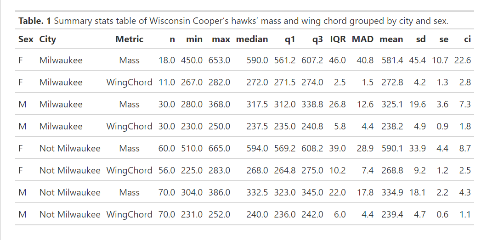
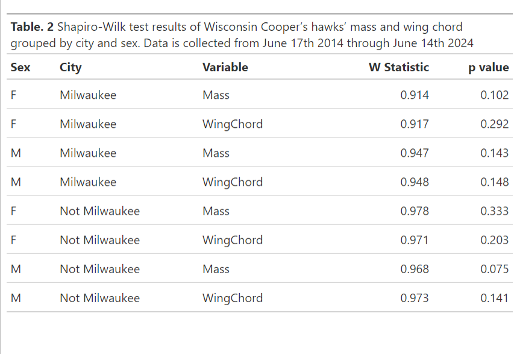
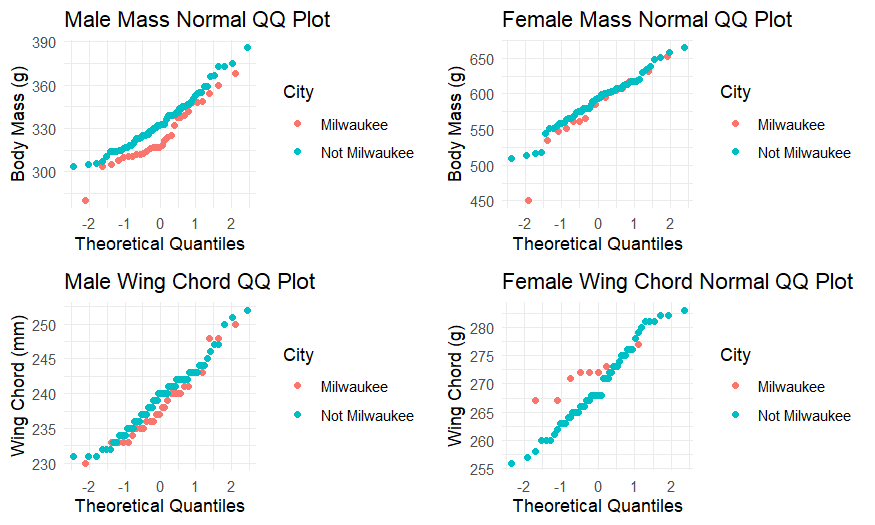
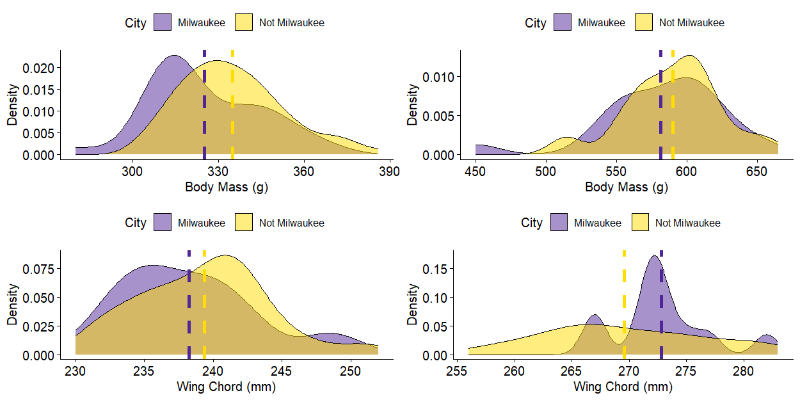
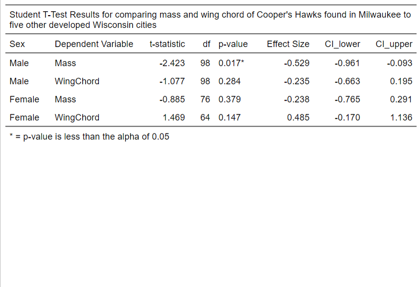
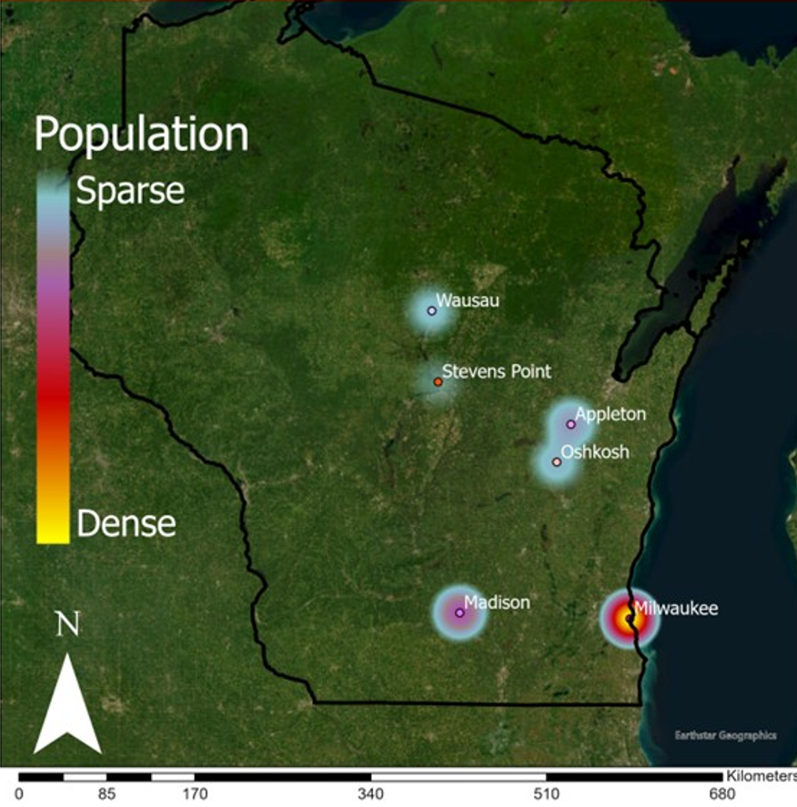

Abstract
Temporal changes in intra-specific morphology among populations can enhance our understanding of the evolutionary processes involved in how species respond to changing environments. Cooper's hawks are a highly plastic species that have adapted to urban environments. Variations across time in body mass and wing chords of migratory birds likely impart greater allometric and energetic efficiency in long-distance flights.Increases in thermal cover is a prevalent topic that presents a major environmental hurdle to eco-physiological adaptations in birds This is due in part to increasing urbanization which causes environments proximate to urban areas to have a higher thermal cover, otherwise known as urban heat islands. Birds show significant changes in body mass and other morphological attributes in response to increases in thermal cover. Birds run higher body temperatures than most other vertebrates and thus they can suffer from heat prostration and heat stress at a quicker rate, and are thus incentivized to adapt to these changes in their environment. We hypothesize that Cooper's hawks found in urban heat island prone cities will have higher body mass and longer wing chords compared to those in rural areas. We used a students T test to analyze significant differences amongst urban vs xurban Cooper's hawks wing chords and body mass measurements. We found that male Cooper's hawks found in urban heat island prone cities had significantly lower body mass than those found in rural areas, but no significant difference in wing chord length ine either sex. This suggests that urban heat island effects may be a selective pressure on Cooper's hawks.
PowerPoint Presentation
Key Findings
- Male body mass was significantly lower in urban heat island prone cities than in rural areas, but no significant difference was found in female body mass.
- No significant difference was found in wing chord length between urban and rural areas for either sex.
Selected Figures
{kind=link}

{kind=link}

{kind=link}

{kind=link}

{kind=link}

{kind=link}

Methodology
The mass and wing chord measurements are from a combination of low population density Wisconsin cities and from Milwaukee, WI. While there is no consensus on an exact population density or size in which the urban heat island effect will start to have significant changes in city environments, there is consensus that an increase in population growth is directly correlated to an increase in urban heat island effects (Oke 1973, Hosein et al. 1977). Measuring the exact effects of differences in heat island effects among cities is a difficult, expensive and labor-intensive task. Wei et al. suggests that a model that takes direct ambient temperature measurements related to the log of population size directly describes the urban heat island effects scaling with population size the best (Wei et al. 2024). These authors also suggest that once a metro area’s population reaches 1 million, the urban heat island effects start to increase ten-fold with relation to population size as nitrous dioxide levels and ambient heat levels rise by 40%. They estimate that the 1 million population mark relates to an increase in ambient temperatures when compared to rural areas in similar geographic environments by about 8° C. The Milwaukee metro area contains over 1,500,000 inhabitants as of the start of 2025 and is the only metro within Wisconsin to contain over 1,000,000 people (U.S. Census Bureau 2025). We compare Milwaukee versus five other Wisconsin towns/cities for this reason. We created theoretical quantiles plots (Figure 1.) for each of our datasets (Table 1.) and ran our data through a Shapiro-Wilk test (Table 2.) to look for normalcy among each dataset. A Shapiro-Wilk test was chosen as it is the most suitable for continuous data (Ogunleye et al. 2018). We used an unpaired Student’s T-test to determine significant differences among mass and wing chord metrics measured within the two different groups of Cooper’s hawks, those from Milwaukee and those found in five other Wisconsin cities. No significant outliers were identified, and the data was shown to be normally distributed (Figure 1. Table 3.) We used R, version 4.3.1 (R Core Team, 2023) for processing and analyzing data due to its free access and open-source functionality (Wickham 2019). Base R, readr (Wickham et al. 2024), tibble (Müller and Wickham 2025) and dplyr (Wickham et al. 2025) packages were used for data preparation. The Shapiro-Wilk test was run with the package rstatix (Kassambara 2023) Empsyc (Thériault 2023) package was used to run the unpaired Student’s T-test as the samples were independent of each other. We then used the packages ggplot2 (Wickham 2016), ggpubr (Kassambara 2025) and gt (Iannone et al. 2025) for creating tables and figures.
install.packages("rempsyc")
library(rempsyc)
pkgs <- c("effectsize", "flextable", "broom", "report", "dplyer", "kableExtra")
install_if_not_installed(pkgs)
All_hawks <- COHAData1
AllHawks = data.frame(
Sex = All_hawks$Sex,
Mass = All_hawks$`Mass (g)`,
City = All_hawks$City,
BandNumber = All_hawks$`Band #`,
Date = All_hawks$Date,
WingChord = All_hawks$`Wing chord (mm)`)
MaleHData <- subset(AllHawks, Sex != "F")
FemaleHData <- subset(AllHawks, Sex != "M")
##Creates dataframes for hawks from/not from Milwaukee##
MilMales <- subset(MaleHData, City == "Milwaukee")
NonMilMales <- subset(MaleHData, City != "Milwaukee")
MilFemales <- subset(FemaleHData, City == "Milwaukee")
NonMilFemales <- subset(FemaleHData, City != "Milwaukee")
MMMass <- MilMales$Mass
NMMass <- NonMilMales$Mass
MFMass <- MilFemales$Mass
NFMass <- NonMilFemales$Mass
MMWC <- MilMales$WingChord
NMWC <- NonMilMales$WingChord
MFWC <- MilFemales$WingChord
NFWC <- NonMilFemales$WingChord
MMASSt.test.results <- nice_t_test(
data = MaleHData,
response = "Mass",
group = "City",
verbose = TRUE,
var.equal = TRUE)
MMASSt.test.results
FMASSt.test.results <- nice_t_test(
data = FemaleHData,
response = "Mass",
group = "City",
verbose = TRUE,
var.equal = TRUE)
FMASSt.test.results
MWCt.test.results <- nice_t_test(
data = MaleHData,
response = "WingChord",
group = "City",
verbose = TRUE,
var.equal = TRUE)
MWCt.test.results
FWCt.test.results <- nice_t_test(
data = FemaleHData,
response = "WingChord",
group = "City",
verbose = TRUE,
var.equal = TRUE)
FWCt.test.results
combined_results <- bind_rows(
MMASSt.test.results %>% mutate(Sex = "Male", .before = 1),
MWCt.test.results %>% mutate(Sex = "Male", .before = 1),
FMASSt.test.results %>% mutate(Sex = "Female", .before = 1),
FWCt.test.results %>% mutate(Sex = "Female", .before = 1))
library(flextable)
combined_results <- combined_results %>%
mutate(across(where(is.numeric), ~round(.x, digits = 3)))
# Convert the 'Value' column to character
combined_results$p <- as.character(combined_results$p)
# Add an asterisk to a specific value (e.g., where Value is 25)
combined_results$p[combined_results$p == "0.017"] <- paste0(combined_results$p[combined_results$p == "0.017"], "*")
library(knitr)
library(kableExtra)
flextable(combined_results) %>%
set_header_labels(
t = "t-statistic",
p = "p-value",
d = "Effect Size",
CI_Lower = "CI Lower",
CI_Upper = "CI Upper"
) %>%
autofit() %>%
add_header_lines(values = "Student T-Test Results for comparing mass and wing chord of Cooper's Hawks found in Milwaukee to five other developed Wisconsin cities") %>%
add_footer_lines(values = "* = p-value is less than the alpha of 0.05")
Conferences & Symposiums
- 2025 Riveredge Nature Center Student Research Symposium, Saukville, WI
{kind=link}
{kind=link}
{kind=link}
{kind=link}
{kind=link}
{kind=link}
{kind=link}
{kind=link}
{kind=link}
{kind=link}
{kind=link}
{kind=link}
{kind=link}
{kind=link}
{kind=link}
{kind=link}
{kind=link}
{kind=link}
{kind=link}
{kind=link}
{kind=link}
{kind=link}